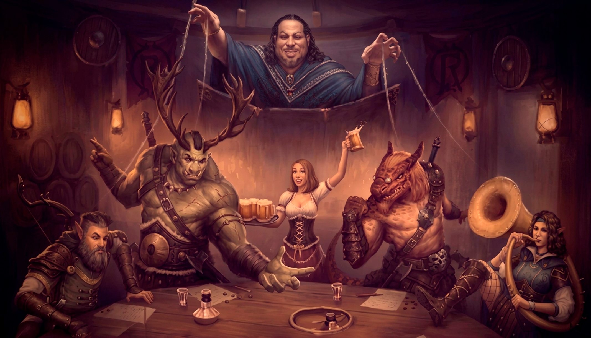
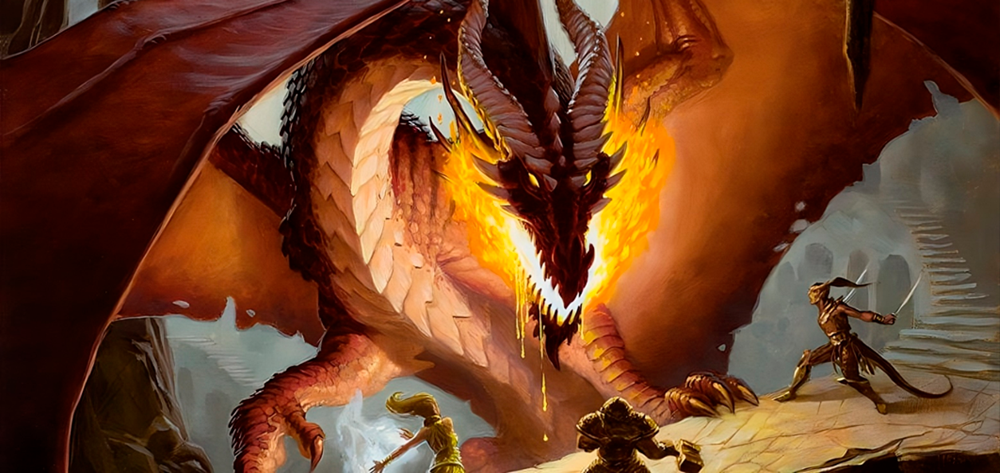
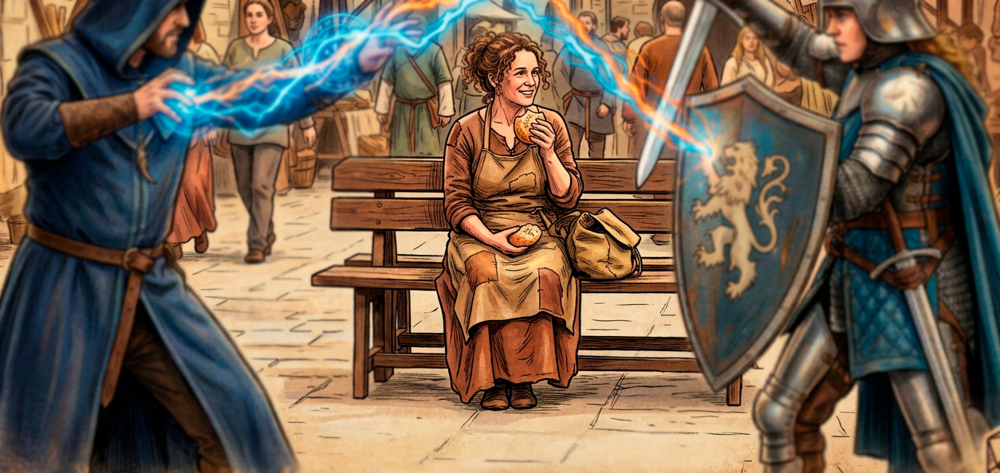
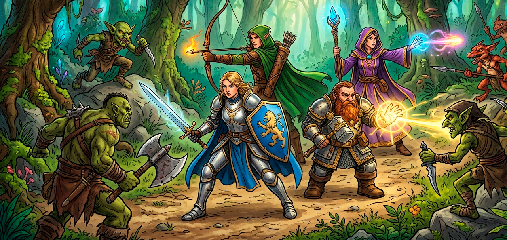
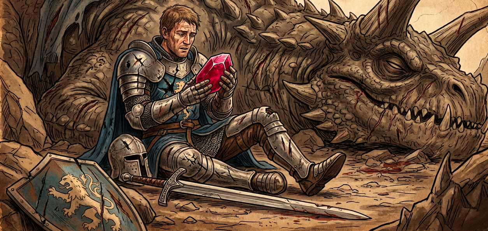
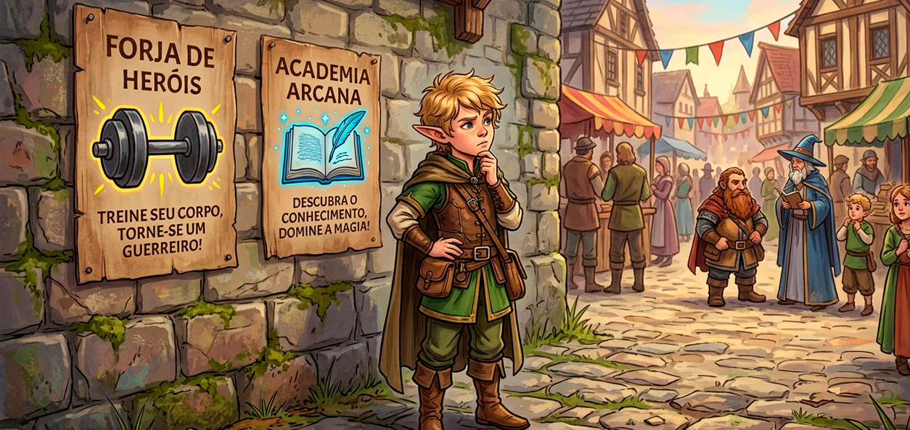

Tem certeza que você quer fazer isso?
Todo Mestre para um jogador em algum momento
Mestrar ou narrar é apresentar e conduzir a aventura e coordenar os jogadores e personagens. A palavra do Mestre é final, não pode ser questionada. Tudo o que ele diz se torna real no mundo imaginário do jogo. Ele pode inclusive contrariar todas as regras do sistema, e criar outras quantas quiser.
Sempre que um jogador quiser fazer algo com o seu personagem o Mestre dirá se ele conseguiu ou não – normalmente envolvendo a rolagem dos dados.
Mas o dever principal do Mestre, o mais importante, é fazer com que os jogadores se divirtam, contando uma história interessante, e sem abusar de seu poder.
Dever importanteSer Mestre é divertido, mas não é fácil, pois ele tem mais trabalho do que todos os outros jogadores. Ele deve conhecer todas as regras, e ele é quem ensina o jogo para os outros jogadores se necessário.
Ele também inventa as aventuras. Ele pode usar aventuras prontas, e alterar o que for necessário, mas, no fim de tudo, ele vai ter que improvisar de acordo com as atitudes dos personagens. Não é raro um Mestre ter todo um caminho e uma conclusão prontos para sua aventura, só para os jogadores irem completamente para o outro lado, ignorando tudo o que ele criou.
Por outro lado, o Mestre deve ser capaz de guiar os jogadores pelos caminhos da narrativa que ele quer.
Outro papel importante do Mestre é definir o mundo da aventura, ou o chamado Cenário de Campanha. O Mestre decide qual vai ser o gênero (medieval, conto de fadas, futurista...) e o que combina ou não com seu mundo, que vai esculpir como quiser, seja inventando tudo, seja baseando-se em algo existente. Afinal, o mundo da aventura tem que ser atrativo para os jogadores.
E como o Mestre inventa o mundo da aventura, ou o Cenário de Campanha? Isso varia muito, cada Mestre faz de um modo. Ele pode se basear na nossa Terra, usar um cenário pronto, ou até mesmo se basear em histórias como O Senhor dos Anéis, Batman, ou Branca de Neve e os Sete Anões. A criatividade é livre.
A única exigência é que o cenário deve ser atraente para os jogadores. É interessante oferecer um resumo do cenário, ou uma lista de fatos relevantes, para que o grupo entre no mundo da aventura.
Segredo: rolagens ocultasQuando os jogadores rolam os dados, devem fazer isso abertamente, para que todos possam ver. O Mestre não precisa fazer isso; se ele quiser ele pode esconder os resultados dos dados. Ele faz isso para que um resultado indesejado ou muito ruim não atrapalhe o caminhar da aventura.
Se jogar em segredo o Mestre não precisa revelar o resultado e nenhum jogador tem o direito de exigir isso. Ele deve sempre tentar manter o segredo, para que os jogadores nunca notem que ele está escondendo algo ou percebam para a onde a trama vai.
Pela diversão!O Mestre NÃO joga contra os jogadores. Eles não teriam chance, porque o Mestre é o deus desse mundo imaginário. Ele pode dizer que um meteoro caiu do céu e eliminou todos os aventureiros, e isso vai realmente acontecer no mundo da aventura e nada pode impedir. Mas isso não seria divertido.
O Mestre precisa ser justo. Seu papel é colocar o desafio no caminho dos jogadores, mas nada que torne a aventura chata e cansativa. Ele é como um escritor, criando uma história emocionante para que todos se divirtam. Acima de tudo, ele deve ter bom senso e sabedoria.
Se um jogador tenta fazer uma coisa sensata, como tentar abrir uma porta com um pé-de-cabra, suas chances de conseguir são maiores. O Mestre pode facilitar na rolagem do dado, ou até mesmo apenas dizer “você conseguiu”. Por outro lado, se o jogador tenta algo absurdo, como tentar abrir a mesma porta com um palito de sorvete, então o Mestre diz que é impossível ou torna o teste muito difícil.
Outro ponto que o Mestre deve atentar é narrar o que acontece sem ser rígido ou formal demais e mantendo o interesse. Por exemplo, evite dizer “o zumbi perdeu 9 PV com seu ataque”, fica melhor “o ataque atingiu a criatura, que parece ferida, mas continua indo até você lentamente”. Vamos falar mais sobre narração mais adiante.
VigilânciaO Mestre deve acompanhar com muita atenção a criação dos personagens pelos jogadores. Um jogador experiente pode fazer malabarismos com os números e criar um personagem superpoderoso, capaz de desequilibrar o grupo e estragar a aventura. Não importa se o jogador seguiu as regras, o Mestre pode proibir qualquer personagem que achar inadequado.
Ele também pode, por exemplo, vetar Vantagens ou itens mágicos muito poderosos, ou não permitir que eles sejam comprados com pontos, mas recebidos como prêmios na aventura; pode até exigir que todo personagem tenha uma Desvantagem se quiser.
É importante o Mestre participar da criação da história de cada personagem, para ajudar os jogadores, manter a ordem, e para usar esses detalhes de cada um na própria narrativa.

Uma aventura é o mesmo que uma história, mas não é o mesmo que uma partida ou uma sessão de jogo: uma partida começa quando os jogadores se reúnem e termina quando eles vão embora, mas uma aventura pode durar muitas partidas, se estendendo por dias, meses ou anos. É como se fosse uma grande história dividida em capítulos, que parou porque o tempo acabou, mas vai continuar em outro dia.
E o que acontece quando uma aventura termina? Uma consequência comum é que os aventureiros sobreviveram e estão muito mais poderosos. O grupo sempre pode jogar outra aventura, e outra, e mais outra, sempre com heróis mais fortes e desafios maiores, até que seus personagens se aposentem ou não consigam mais se aventurar.
A beleza do RPG é que os personagens não acumulam apenas poderes e armas, mas também histórias. Seus erros e acertos passados ficam marcados. Assim, aos poucos o mundo imaginário dos jogadores vai ficando mais complexo, os eventos se juntando e criando uma história maior.
E quando as aventuras se acumulam e se encaixam e criam uma grande história naquele mundo, temos o que chamamos de “campanha”. Aventuras tem começo, meio e fim. Campanhas podem durar para sempre. Ela é a história completa dos heróis, e só acaba quando o grupo quiser que ela acabe.

Grandes aventuras não são feitas apenas de heróis. Elas também envolvem aliados, ajudantes, vítimas indefesas, inimigos e, é claro, vilões. Mas quem faz o papel dos personagens secundários? O Mestre. Vamos chamar eles aqui de NPC.
E quem são os NPC? São todos os outros personagens que os jogadores encontram pelo caminho, do vendedor de peixes da vila ao vilão superpoderoso.
Os NPC são feitos basicamente iguais aos personagens dos jogadores. Eles também têm Fichas de Personagem e seguem as mesmas regras básicas de criação. O Mestre não precisa dar detalhes, nem fazer fichas para todos os NPC – só para os mais importantes. Criaturas podem compartilhar a mesma Ficha de Personagem, para facilitar a aventura.
No fim das contas, o Mestre cria o NPC como ele quiser. Isso pode parecer injusto para os jogadores, mas lembre-se: o Mestre não joga contra os jogadores. O que ele faz deve beneficiar a história.

Um encontro aleatório ocorre quando os personagens são surpreendidos por uma criatura ou um bando delas. Pode ser também um lugar estranho encontrado no meio do caminho, um desvio que faz o grupo se perder, uma mulher estranha no meio da estrada com um pedido sinistro e promessa de riqueza...
O Mestre pode criar um encontro aleatório quando ele julgar necessário para a história, ou para agitar as coisas, colocando inimigos no caminho dos heróis, ou atacando enquanto eles dormem. Cada Mestre pode definir suas próprias regras para esses encontros.

Se quiser, o Mestre pode fazer com que os jogadores encontrem espólios em personagens derrotados, ou escondidos em cavernas e calabouços, ou do jeito que ele preferir usar para recompensar os jogadores.
Espólios podem conter desde objetos mundanos e sem valor até grandes tesouros ou peças únicas.
Ele também pode usar o dado para definir quanto dinheiro ou quão valioso é o item que os jogadores irão encontrar com rolagens. Quanto maior o número no dado, mais valioso ou até mágico o item pode ser.
Deve haver um equilíbrio: um grupo fraco não vai encontrar armas mágicas poderosas tão facilmente, e um inimigo como um dragão não vai deixar apenas algumas moedas de ouro para trás.

Aventureiros evoluem. Cada missão concluída, cada inimigo vencido e cada desafio superado tornam os heróis mais experientes e poderosos. Essa evolução é representada pelos Pontos de Experiência, ou XP.
O Mestre deve recompensar os jogadores com XP também no final de cada aventura. E todos os jogadores que atuaram bem, agindo de acordo com seus personagens, devem ganhar pontos por sua atuação.